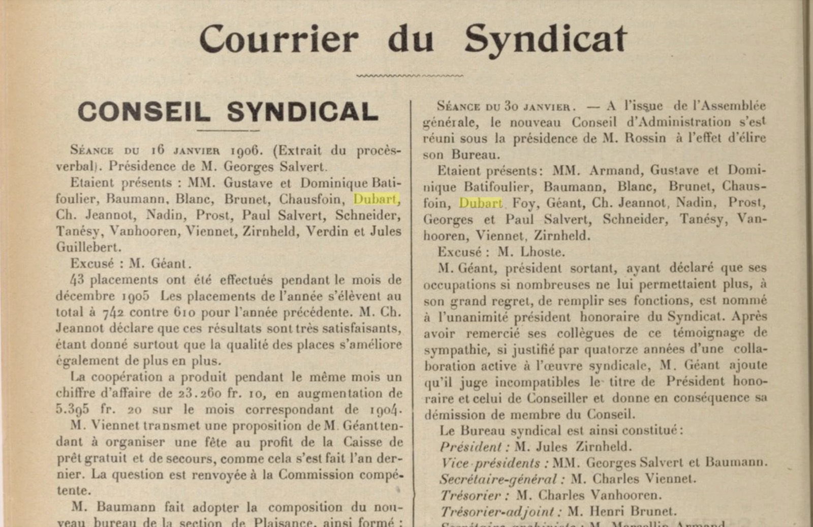

Presse · 25/02/1906 (séances des 16/01 et 30/01/1906)
« L'Employé » (Paris), numéro du 25 février 1906 : « Courrier du Syndicat — Conseil syndical » (séances des 16 et 30 janvier 1906) et commissions pour 1906 (p. 25)
Ce document établit
- Un « Dubart » (prénom non donné), non membre du Bureau, figure parmi les présents aux séances du Conseil du Syndicat des employés du commerce et de l'industrie du 16 janvier 1906 (présidence de Georges Salvert) et du 30 janvier 1906 (à l'issue de l'Assemblée générale, présidence de M. Rossin), publiées dans L'Employé du 25 février 1906. non vérifié A0912
« Séance du 16 janvier 1906. (Extrait du procès-verbal). Présidence de M. Georges Salvert. Etaient présents : MM. Gustave et Dominique Batifoulier, Baumann, Blanc, Brunet, Chausfoin, Dubart, Ch. Jeannot, Nadin, Prost, Paul Salvert, Schneider, Tanésy, Vanhooren, Viennet, Zirnheld, Verdin et Jules Guillebert. / Séance du 30 janvier. [...] Etaient présents : MM. Armand, Gustave et Dominique Batifoulier, Baumann, Blanc, Brunet, Chausfoin, Dubart, Foy, Géant, Ch. Jeannot, Nadin, Prost, Georges et Paul Salvert, Schneider, Tanésy, Vanhooren, Viennet, Zirnheld. » (lecture incertaine : non)
- Pour 1906, un « Dubart » (prénom non donné) est nommé membre de la Commission des secours mutuels (président G. Salvert, administrateur de la Caisse de prêt gratuit et de secours ; avec Ch. Jeannot et Tanésy) et, avec Foy, « représentant du Conseil » à la Commission des soldats (président Beaud), selon L'Employé du 25 février 1906, p. 25. non vérifié A0913
« Secours mutuels. — MM. G. Salvert, administrateur de la Caisse de prêt gratuit et de secours, président ; Dubart, Ch. Jeannot, Tanésy. / Soldats. — MM. Beaud, président ; Cénac, vice-président ; d'Hébécourt, secrétaire ; Dubart et Foy, représentants du Conseil, [...] » (lecture incertaine : non)
- Contexte de la source (non assertion sur Léon) : selon L'Employé du 25 février 1906, le Conseil d'administration réuni le 30 janvier 1906 sous la présidence de M. Rossin élit son Bureau : Jules Zirnheld président ; Georges Salvert et Baumann vice-présidents ; Charles Viennet secrétaire général ; Charles Vanhooren trésorier ; Henri Brunet trésorier-adjoint ; Marcellin Armand secrétaire archiviste. M. Géant, président sortant, est nommé président honoraire à l'unanimité et démissionne du Conseil (« quatorze années d'une collaboration active à l'œuvre syndicale »). vérifié A0914
« Le Bureau syndical est ainsi constitué : Président : M. Jules Zirnheld. Vice-présidents : MM. Georges Salvert et Baumann. Secrétaire-général : M. Charles Viennet. Trésorier : M. Charles Vanhooren. Trésorier-adjoint : M. Henri Brunet. » (lecture incertaine : non)
- Contexte de la source (non assertion sur Léon) : selon le Conseil du 16 janvier 1906 publié dans L'Employé du 25 février 1906, le Syndicat a effectué 742 placements en 1905 contre 610 en 1904 (43 en décembre 1905) ; la coopération a produit en décembre 1905 un chiffre d'affaires de 23.260 fr. 10. vérifié A0915
« 43 placements ont été effectués pendant le mois de décembre 1905 Les placements de l'année s'élèvent au total à 742 contre 610 pour l'année précédente. » (lecture incertaine : non)
Transcription
recherches/generation-3/leon-apres-1900/enquete.md
Personnes concernées
Deux captures d'écran de Jessica ; date du numéro donnée par Jessica ; adresse Gallica non relevée. Prénom de Dubart jamais donné ; nom surligné sur les captures. Le numéro apparaît aussi comme résultat n° 13 d'une liste de résultats de recherche (S0500, capture) : mêmes extraits ; rien de nouveau.
Continuer
Toutes les archives →Document précédent« L'Employé » (Paris), numéro du 25 avril 1904 (14e année, n° 120) : extraits de résultats de recherche plein texte « Dubart » (Conseil syndical, séance du 15 mars 1904 ; extrait sur « ces mesures »)25/04/1904 (séance du 15/03/1904)Document suivant« L'Employé » (Paris), numéro du 15 décembre 1906 : « Conseil syndical — Séance du 20 novembre 1906 », société « Les Petits Carreaux » (concours de tir, p. 188), annonce « L'Avenir Mutuel »15/12/1906 (séance du 20/11/1906)